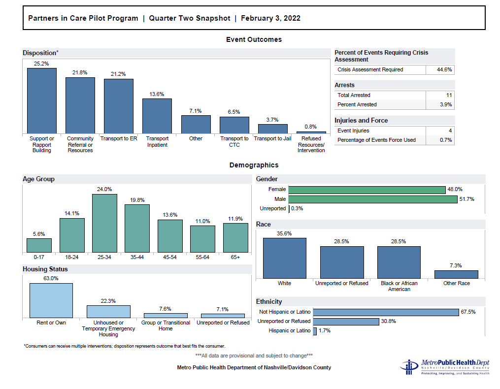
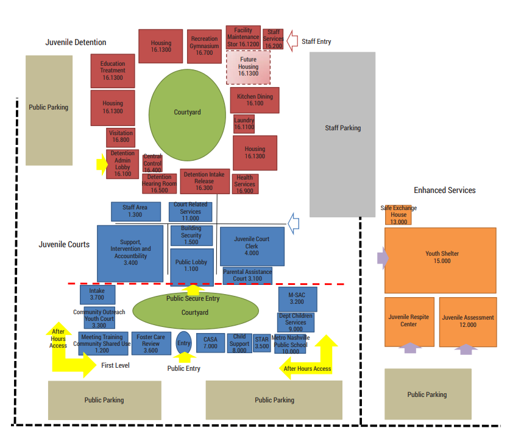
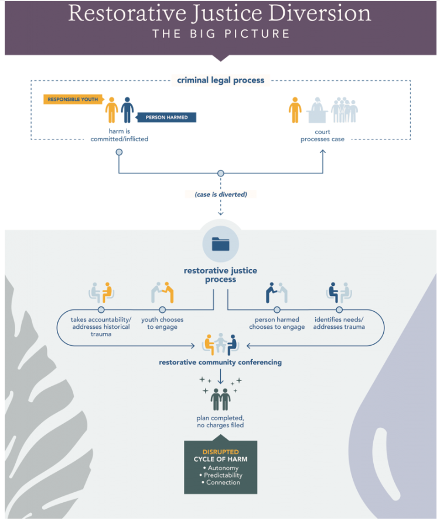
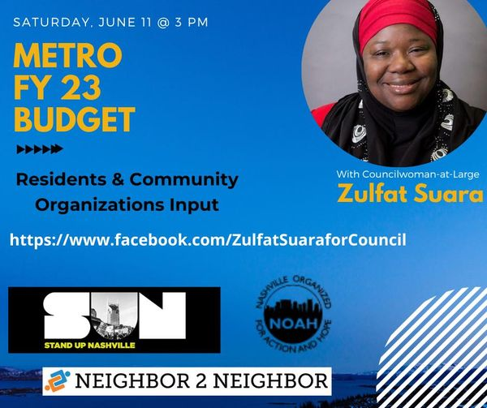

Budget Conversations- Alternative to Policing
Historically, communities across the country use police and punitive approaches as the primary tools to address health and social issues. This results in the funneling of millions of people, especially black and brown communities, into jails and prisons. Nationwide protests over police accountability and racial justice have reenergized longstanding efforts to fundamentally change how police departments respond to social issues that include mental illness, substance use, homelessness, community violence, and poverty. There have been increased calls and efforts by cities to radically change how we approach these issues and search for alternatives to policing strategies.
On June 4, I was joined by the following amazing panelists as we discuss various alternative to policing programs and strategies throughout Metro.
- Pastor George Brooks: Pastor- St. James Missionary Baptist Church
- Mr. Travis Claybrooks: CEO-Raphah Institute
- Ms. Jill Fitcheard: Executive Director- Community Oversight Board
- Inspector David Imhof: Office of Alternative Policing Strategies- Metro Nashville Police Department
- Mr. Anthony Johnson: Youth Violence Prevention Strategist- Metro Health
- Mr. Mike Lacy: Office of Community Safety-Mayor’s Office
- Commander Carlos Lara: Office of Community Outreach -Metro Nashville Police Department
- Mr. Michael Randolph: Crisis Manager- Mental Health Cooperative
Below are the alternative to policing programs shared by my panelists
1. PARTNERS IN CARE PROGRAM (MHC/MNPD)
The Partners in Care is a co-response mental health program and is a collaboration between the Mental Health Resources Center and Metro Nashville Police Department. The program was introduced and funded in the FY 22 budget. Piloted in the North and Hermitage precincts, the program pairs a mental health professional, who is a master’s level clinician, and an officer who has received 40 hours of crisis intervention training.
The goal of this program is to assist those having a behavioral health crisis. It is important to get individuals access to the care they’d need so that they be moved into the health care system rather than the criminal justice system. The program requires coordination between the individuals, officers, clinicians, third parties at home, and all access to care and service providers.
IS THE PROGRAM WORKING?
The program defines crisis as someone expressing suicidal intent, someone experiencing psychosis, delusions, or hallucinations, and may be unable to care for themselves. Of the 821 total calls (542 in 1st quarter and 279 in 2nd quarter) received, about 45% resulted in a full mobile crisis assessment. For both quarters, the percentage of arrests was approximately 4%.

WITH A 45% SUCCESS RATE, WHY IS THE PROGRAM NOT IN EVERY PRECINCT?
For the program to be successful, It’s important to pair a clinician with a trained officer to answer these mental health calls. This cannot happen without trained supervisors and coordinators. It is also important for all patrol officers to undergo crisis intervention training.
Everyone agrees a proper infrastructure is required, which is currently in place. As a result, the expansion plan is to add a new precinct to the program every 6 months.
DOES THE MAYOR’S BUDGET INCLUDE FUNDING FOR THIS PROGRAM?
Yes, the mayor’s budget has funding for the Partners in Care program bearing in mind that this is limited implementation (not yet in all precincts). Since the program is in collaboration with other organizations. Money goes to the Public Health Department, which in turn goes to the Mental Health Co-Operative to run our program. Money goes to training, not only training crisis intervention, but training our recruits in mental health awareness and what programs are out there.
2. NO POLICE MENTAL HEALTH CRISIS RESPONSE- MAYOR’S OFFICE/HEALTH DEPT
During the last fiscal year, the community organization NOAH advocated for a non-law-enforcement crisis response approach. Community responders intervene and make referrals to health and social services without the uniforms, sirens, and handcuffs that can increase distress for people in crisis. While the NOAH program was not included in the budget last year, The FY23 mayor’s budget includes funding to start planning for a similar model. The city received a grant to start planning for a non-law enforcement response with community stakeholders, the fire department, EMS, the police, and the health department.
The grant will ensure adequate planning for training, additional funding for for mental health services so they can receive help from a counselor, therapist, or medication quickly. There would also need to be additional beds for inpatient treatment as well.
Other efforts include the implementation of a different number for these calls. In July, a 988 is scheduled to be implemented so that individuals can call about a mental health crisis. Currently, all calls go to 911 and the police have no choice but to respond to those calls. An additional line so that when the operator sees the call, they can see that it is a mental health crisis and route accordingly.
While there is a new triage system, it is hard to differentiate when it is mental health or behavioral health crisis since it often is presented as trespassing, indecent exposure, disorderly conduct, or a variety of things. The planning will include the development of a whole new set of questions so that we are able to dive deeper to find out if it’s appropriate for a police response or if it would be appropriate for another team to respond.
3. YOUTH INTERVENTION PROGRAMS- JUVENILE COURT/OTHERS
Partnered with the Juvenile Court, Mayor’s Office, MNPD, and the Office of Family Safety, the program’s goal is to send juveniles with low-level or status offenses, to an assessment center instead of a juvenile center. Data has shown that by going to a juvenile center once, a juvenile is 7x more likely to go again and possibly end up in the adult system.
The Juvenile Intervention Program takes the juvenile to an assessment center where their immediate needs, such as health care, clothing, food, etc. are assessed. An additional assessment is also conducted to find out the underlying causes for the undesired behavior that is occurring not just with the individual but also with their families. This allows juvenile and their families to be referred to the resources they need without being put in the juvenile justice system.
With a grant for technical assistance, the group is looking into best practices for juvenile diversion. There are also plans to apply for a grant to help build the 3rd floor of the Office of Family Safety to have a pilot program for the assessment center for our youth.
Finally, there is a plan for the construction of The Nashville Youth Campus for Empowerment (“NYCE Campus”). In addition to serving as the home of the Davidson County Juvenile Court, the campus will also be a pre-trial housing facility for justice-involved youth. According to the Juvenile Court website, the NYCE Campus will house resources and agencies that can provide immediate service delivery to families in need. A 24-hour Assessment Center will support youth in crisis while maintaining the safety of the community. The NYCE Campus will provide a center of growth, opportunity, and empowerment for young people in our community from birth through adulthood and a move that will reduce incarceration and help with rehabilitation

DOES THE MAYOR’S BUDGET INCLUDE FUNDING FOR THIS PROGRAM?
The funding for the new campus is included in the Capital Spending Plan
4. GUN RETRIEVAL PROGRAM-(MNPD/CHURCHES)
The goal of the program is to get guns out of the hands of children, creating safer households and safer communities thereby reducing trauma and gun violence. MNPD anonymously partnered with different churches, community centers, and non-profits around the Nashville area and provided a gun case. People can then turn the guns in anonymously, with no question asked. Agreements have also been made with the District Attorney’s office where there will be no further investigation even if the gun was involved with a crime.
DOES THE MAYOR’S BUDGET INCLUDE FUNDING FOR THIS PROGRAM?
This is not a program that costs a lot of money as it just provides the gun cases and has folks turn in the guns. What it needs is to get the word out there.
5. COMMUNITY OVERSIGHT BOARD- (COB)
The creation of the Community Oversight Board (COB) was approved by voters in November 2016. The board has 11 members: 7 nominated by community organizations or private petitions of at least 50 Davidson County residents, 2 by City Council Representatives, and 2 by the Mayor. The independent body is tasked with reviewing cases of alleged Metropolitan Nashville police misconduct.
Function/Power of the COB
- Investigate allegations that Metro Nashville Police Department officers have committed misconduct against members of the public.
- Issue policy advisory and resolution reports assessing allegations of misconduct by the Metro Nashville Police Department.
- Make recommendations to agencies involved in public safety and the administration of justice
- Establish a monitoring program that provides an ongoing review or audit of the complaint process administered by the Police Department Office of Professional Accountability
- Refer matters to the Police Department Office of Professional Accountability and recommend that discipline be given within the parameters of civil service rules and regulations.
- Forward resolution reports that produce factual findings of criminal misconduct and civil rights violations to the District Attorney, Grand Jury, or U.S. Attorney.
In addition to investigating allegations of police misconduct, the COB also serves as a place for family complaints as well as assisting the victims’ families in dealing with the associated trauma. Over the past 10 months, the COB has received many claims. Many of the complainants have experienced trauma and harm, however, the office has limited capacity to assist. It is important to have restorative justice, but there must be healing.
DOES THE MAYOR’S BUDGET INCLUDE FUNDING FOR THIS PROGRAM?
The Community Oversight Board (COB) is asking for 1 penny for 1 dollar of the Police Department’s Budget (of 2 million dollars). With the one penny on the dollar, the COB will be able to add additional positions. Some of the positions requested include investigators, one social worker, and a legal assistant. Unfortunately, the mayor’s budget only includes 4 out of the 9 positions requested. Currently, there is a single investigator for every 517 officers, which is above the national average. With an additional 2 investigators, the number will be reduced to 327 officers to one investigator, which is still higher than the national average of 222 officers per investigator.
We as a city must take responsibility to address the harm that is happening to people who have been harmed by our city workers and while the COB is not technically an alternative to policing program, it’s focused on accountability, listening to complaints, and community outreach can help mitigate police misconduct.

6. COMMUNITY OUTREACH PARTNERSHIPS- MNPD/MINORITY COMMUNITIES
The community partnership program was developed in December 2020 when Chief Drake was appointed as the permanent chief of police in Nashville. The goal of the program is to connect and build partnerships and relationships with communities, where historically there hasn’t been a relationship. Since its creation, MNPD liaisons work with leaders within these communities and have been creating a relationship with the Kurdish, Hispanic, Asian, LGBTQ+, and African American communities.
It’s important to not only work with the communities within Davidson County but learn about the issues within those communities and help deal with crimes and help connect with resources. Examples include providing information about what the police do, why they do it, and how the police department works.
The department recently offered a Kurdish Community Police Academy and looking into providing an International Citizens Police Academy so that MNPD get to learn about different cultures and their communities to provide the understanding and better relationship. The office of community partnership recently partnered with the Goodness Project and provided backpacks, food, and other resources. One of the office’s signature programs is the El Protector program which works with the Hispanic/Latino community in reducing DUIs, traffic fatalities, domestic violence, and crime prevention.
DOES THE MAYOR’S BUDGET INCLUDE FUNDING FOR THIS PROGRAM?
Yes, it includes funding for the program. However, the program can use additional funding for interpreters, for the immigrant communities. With over 120 languages spoken in Nashville, sharing resources with these communities is useless if individuals cannot access those resources due to language barriers.
7. COMMUNITY SAFETY PARTNERSHIP-MAYOR/OTHER NONPROFITS
The Community Safety Partnership supports grassroots violence reduction efforts through Mayor John Cooper Community Safety Partnership. The Fund supports coordinated evidence-based community violence prevention programming, by supporting community groups working to enhance safety and reduce violence, particularly gun violence.
According to the Federal Office of Justice Programs states, “Community safety is achieved when community members live in peace, harmony, and mutual respect and when citizens and community groups feel that they can prevent and control crime.” By working with grassroots organizations, Nashville benefits from the dedication and expertise of these nonprofit organizations that are working on the front lines of improving community safety.
WHAT COMMUNITY ORGANIZATIONS ARE INVOLVED IN THE PROGRAM?
One of the many partner organizations with the community safety program is the Raphah Institute. The organization describes itself as a chance to confront the root causes of societal harm, take a uniquely crafted approach, and see transformative healing for all.
The organization facilitates a restorative justice process for individuals in 3 ways:
- Support the person harmed in identifying the impact of the harm and what they need for repair
- Support youth in taking accountability for the harm and the responsibility in repairing it
- Support youth in identifying the root cause of their choices and give them the tools to transform
The result of the approach is a sense of justice for the person who has been harmed and transformation for the youth who has caused the harm. Together, this makes for a safer and more just community. To date, 60 juveniles have completed the Raphah restorative justice diversion program with many participants describing the process as healing and transformative.

8. CURE VIOLENCE PILOT PROGRAM -MAYOR
The Cure Violence program is a pilot program focused on North Nashville. The aim of the program, also referred to, as the Violence Interrupters or Credible Messengers, is to interrupt violence before it happens.
The program utilizes a public health approach by
- Defining and Monitoring the problem
- Identifying risk and protective factors
- Developing and testing prevention strategies
- Assuring widespread adoption
- Understanding the social determinants of health-related to economic stability, quality education, access, health care access, and quality neighborhoods
- Help promote health, safety, and social/community supports
CONCLUSION
What an inspiring and informative conversation. Our current justice system is punitive and rarely takes into account other mitigating circumstances like mental health and social, and economic factors. These alternative strategies will ensure that we employ preventive measures and in turn reduce the incarceration rate, especially for minority groups. I am therefore excited about a dedicated mental health line and the triage approach and grateful to all who are leading this effort.

While these programs are useful, there is a need to invest more money. The funding for all of these programs in 2023 except for the capital building is less than $10M. This will not cut it. While I understand some of the programs are in the pilot/planning phase, there must be a real commitment to adequately fund them in future years. There is also a need for more restorative work. Kudos to everyone for the restorative work done with our youths, however, we must be able to expand restorative justice into the adult court system.
There must also be more engagement from nonprofits. We should be more responsive at the macro level by funding small nonprofits, especially in communities of color. This allows us to reach as many people and as many communities as possible. We also need to continue to address ways of harm when a police offer is involved in a police shooting or any other kind of misconduct.
Finally, one thing that was apparent during this conversation was that all of the programs rely on collaborations between several governmental and non-governmental partners. The collaboration between MNPD, the Mayor’s office, the Health department as well as several non for profits, communities, and places of worship, is a model that shows that public safety is all our responsibility and the solutions lie with all of us, including residents.
Our alternative to policing strategies should not stop with these programs but must include education, wages, and of course housing. All of these affect our public safety.
If you missed last week’s Budget Conversation with Pastor George Brooks, Mr. Travis Claybrooks, Ms. Jill Fitcheard, Inspector David Imhof, Mr. Anthony Johnson, Mr. Mike Lacy, Commander Carlos Lara and Mr. Michael Randolph, you can watch the entire episode at the link below.
Next Budget Conversation
The next budget conversation is on June 11. A good budget conversation is incomplete without community input. Join community organizer Whitney Pastorek and me, along with representatives from NOAH – Nashville Organized for Action and Hope, Neighbor 2 Neighbor, and STAND UP Nashville live at 3 pm. Live on Facebook. https://www.facebook.com/ZulfatSuaraforCouncil/


Thank you Pastor George Brooks of the St. James Missionary Baptist Church for giving us the space to have this conversation. As always, if you have any questions or concerns about anything we have discussed, please do not hesitate to reach out to me.